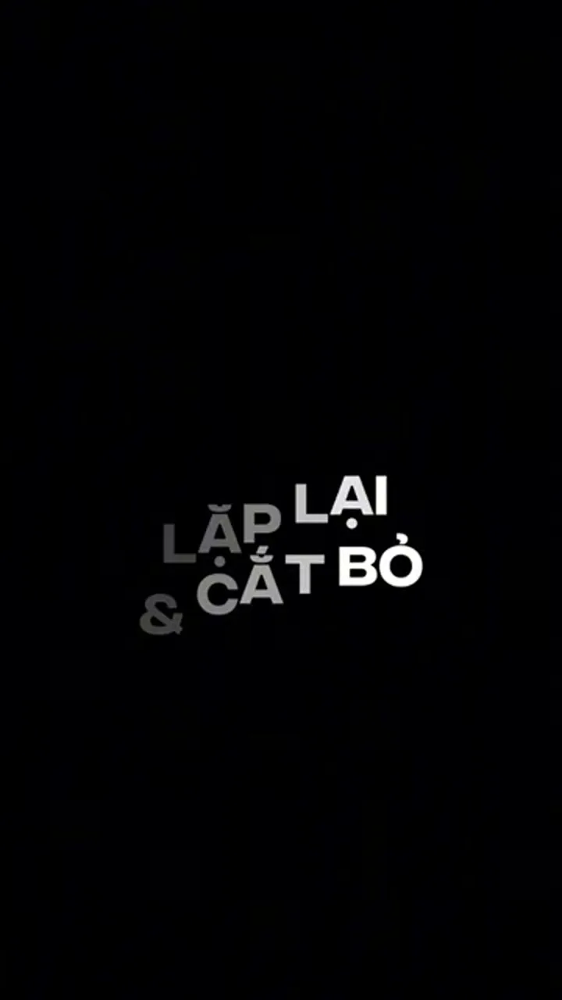
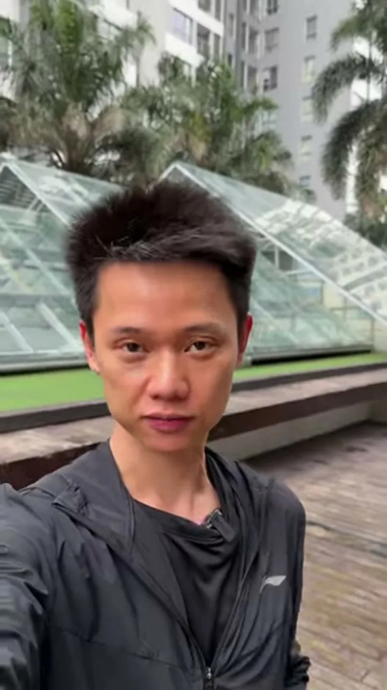
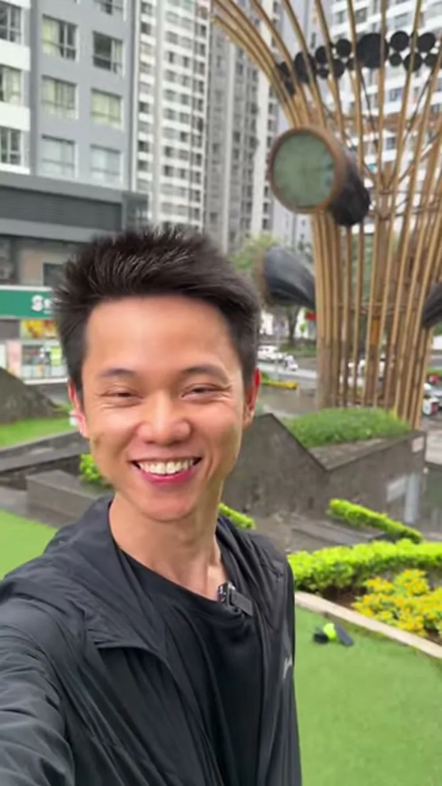
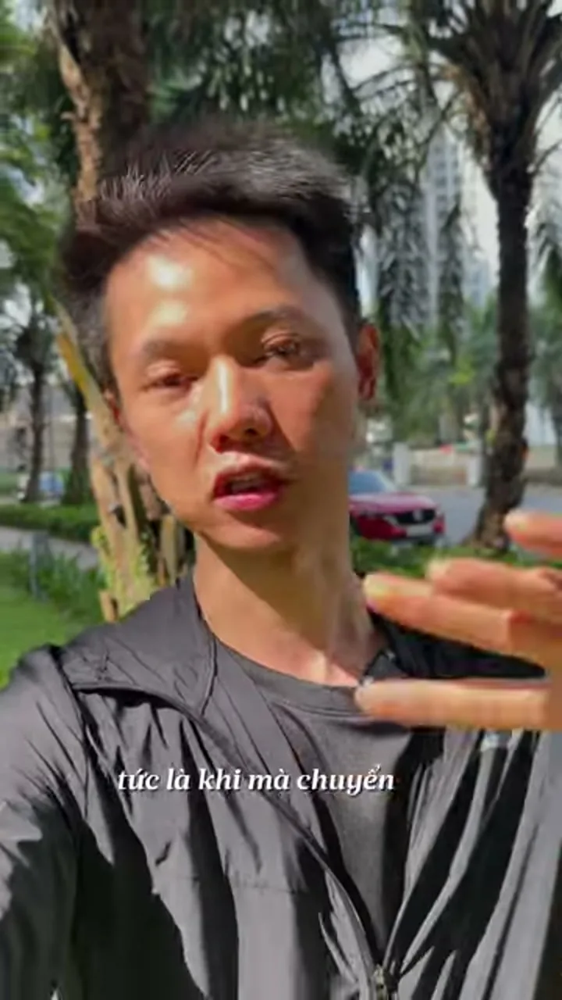
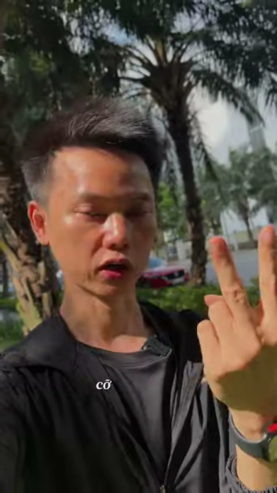
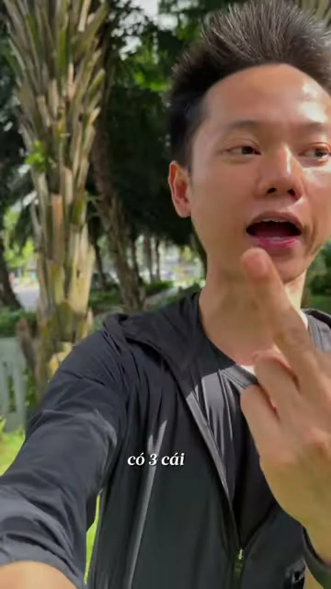

Chuyển cảnh trong chuyển động
Cắt khi tay đang chuyển động thì mắt người xem không kịp thấy vết cắt.
Người mới làm video thường mở bảng hiệu ứng trên phần mềm dựng để chèn xoáy hình, lật trang sách hay chớp trắng giữa hai cảnh quay. Nhưng khách mua hàng giá trị cao nhìn thấy hiệu ứng màu mè là nhận ra ngay video nghiệp dư và lướt qua.
01Bỏ hiệu ứng màu mè, nối cảnh bằng chuyển động thật
Chuyển cảnh không phải là hiệu ứng dán đè lúc dựng, mà là động tác cơ thể được tính sẵn từ lúc bấm máy. Khi hai cảnh đứng yên ghép vào nhau bị giật hình, người mới mới phải lấy hiệu ứng phần mềm đắp lên để che lỗi. Ngược lại, người thạo nghề dùng chính đà vươn tay, nhịp bước chân hoặc cái gật đầu để dẫn mắt người xem trôi êm qua vết cắt.
Đứng im nói hết câu rồi dán hiệu ứng: Nhân vật đứng cứng đờ đợi tắt máy, sang cảnh sau mới cử động. Chèn hiệu ứng xoáy hình hay chớp sáng chỉ làm nhức mắt và đứt mạch tin cậy.
Lặp cùng một động tác ở hai góc máy: Đang vươn tay cầm ly ở góc rộng thì cắt thẳng sang góc cận lúc ngón tay vừa chạm thành ly. Mắt bám theo bàn tay nên vết ghép tàng hình.
Nguyễn Đức Việt gói gọn cơ chế này thành công thức ba nhịp tạo chuyển cảnh tự nhiên ngay tại hiện trường:
Trên kênh Momi Trendii (@hoangnga_home) với các video gia dụng đạt từ 268.500 đến 2,4 triệu lượt xem, không có bất kỳ hiệu ứng chớp nháy nào. Khi Hoàng Nga ấn nút hút chân không hộp thực phẩm trong căn bếp sáng sạch, điểm cắt nằm đúng khoảnh khắc ngón cái vừa nhấn xuống nắp hộp để nối liền sang cảnh cận tiếng máy hút khí.
Hiệu ứng phần mềm là miếng băng dán che vết cắt vụng; chuyển động thật của đôi bàn tay mới là đường khâu tàng hình.
02Quy tắc cắt ở 70% đà chuyển động (70/30)
Mắt con người có phản xạ tự nhiên là đuổi theo vật đang di chuyển. Ngay khoảnh khắc con ngươi đang bận bám theo bàn tay đang vươn ra hay cánh cửa đang mở, não bộ tạm thời không kịp nhận diện sự thay đổi của phông nền phía sau.
Để tận dụng cơ chế thị giác này, bạn chia toàn bộ quãng đường của một động tác từ lúc khởi phát đến lúc dừng hẳn thành 100% và cắt theo tỷ lệ 70/30:
- Cảnh trước (lấy từ 0% đến 70%): Quay từ lúc bàn tay bắt đầu vươn ra cầm cốc, kéo cánh cửa hoặc hạ bút xuống sổ. Cắt dứt khoát ở mốc 70% khi động tác đang đạt tốc độ cao nhất, trước khi tay chạm đích và dừng lại.
- Cảnh sau (vào thẳng từ 30% đến 100%): Bỏ hoàn toàn 1,5 giây đứng chờ lúc mới bấm nút quay. Kéo thanh cắt vào thẳng mốc 30% khi bàn tay ở góc máy mới đã sẵn đà di chuyển và đi nốt quãng đường đến khi đặt yên trên bàn.
Cắt ở mốc 100% nối với 0%: Đợi đặt chiếc cốc nằm im trên mặt bàn rồi mới cắt, sang cảnh sau tay lại bắt đầu nhấc lại từ đầu làm nhịp video khựng lại hai lần.
Cắt ở mốc 70% nối vào 30%: Đáy cốc ở góc trung cảnh còn cách mặt bàn hai đốt ngón tay thì cắt thẳng sang góc cận lúc đáy cốc chạm mặt gỗ nghe tiếng cạch gọn gàng.
Chuỗi mẫu 1 · Ngoài phố — Nối hướng nhìn và vật cắt ngang tiền cảnh · 6 cảnh


Chuỗi mẫu 2 · Gian bếp — Cắt nối liên hoàn thao tác mở tủ lấy nước · 6 cảnh


Đừng đợi bàn tay làm xong rồi mới cắt; hãy cắt ngay lúc ngón tay đang đi được hai phần ba quãng đường.
03Cấp độ 1: cầm máy bằng tay như chụp selfie
Khi bước vào quán cà phê, hội chợ, công trình hay đi bộ ngoài phố đông người, dựng chân máy cồng kềnh dễ làm bạn ngại ánh nhìn xung quanh. Ở Cấp độ 1, bạn chỉ cần cầm điện thoại giơ ngang mặt như đang chụp ảnh cá nhân, bấm quay 5 giây rồi cất máy đi tiếp (Xem bài giảng gốc Cấp độ 1).
| Nhóm thao tác | Cách thực hiện đúng cơ học mắt | Lỗi làm lộ vết cắt |
|---|---|---|
| 1. Gật đầu dứt khoát | Cuối cảnh 1 hơi ngước nhẹ cằm lấy đà rồi gật xuống; đầu cảnh 2 tiếp đà ngẩng đầu lên ở bối cảnh mới. | Gật đầu chậm và thiếu nhịp lấy đà ngược chiều nên cảnh sau nhảy vào đột ngột. |
| 2. Quay đầu sang ngang | Đang nhìn ống kính, nhích nhẹ đầu sang phải lấy đà rồi quay nhanh sang trái; cảnh 2 mặt từ bên phải quay về ống kính. | Cảnh 1 quay sang trái nhưng cảnh 2 lại quay ngược chiều làm hai lực đâm vào nhau. |
| 3. Lia cổ tay ngang | Cuối cảnh 1 vẩy nhanh cổ tay cầm điện thoại sang một bên tạo vệt mờ; đầu cảnh 2 lia cùng chiều vào khuôn mặt đang nói. | Đưa tay quá chậm khiến người xem nhìn rõ các vật thể lộn xộn ở đoạn giữa. |
| 4. Hất máy dọc lên xuống | Hất nhanh điện thoại từ dưới lên trời ở cuối cảnh 1; kéo máy cùng hướng từ dưới đất lên gương mặt ở đầu cảnh 2. | Ngập ngừng ở đầu cú máy thay vì cắt thẳng vào khung hình đã mờ chuyển động. |
| 5. Che kín cụm ống kính | Đưa lòng bàn tay hoặc cuốn sổ áp sát che tối 100% ống kính ở cuối cảnh 1; rút tay ra mở bối cảnh mới ở đầu cảnh 2. | Che hờ còn khe sáng ở góc màn hình làm khung hình bị chớp trắng tại điểm nối. |
Khi kết hợp vừa đi bộ chậm, vừa nói câu ngắn 6–10 chữ, vừa đổi bối cảnh bằng cái quay đầu hoặc vẩy cổ tay, cả cơ thể bạn lẫn hậu cảnh phía sau đều chuyển động nhịp nhàng, giữ mắt người xem đi suốt hết bài Walk & Talk.
Bài giảng Cấp độ 1 · Cầm tay — 6 mốc thao tác cơ thể và cổ tay của Nguyễn Đức Việt









Muốn cú gật đầu hay lia máy ăn khớp, hãy nhích nhẹ ngược chiều nửa nhịp để lấy đà rồi mới quất dứt khoát.
04Cấp độ 2: đặt chân máy lệch trên 30 độ
Khi làm việc tại bàn, trong tiệm hoặc dưới xưởng sản xuất — giống như cách Từ An — Men Mộc An đặt máy quay đôi bàn tay giã từng củ gừng và vớt lòng đỏ trứng gà ngâm mật ong đạt 2,2 triệu lượt xem — việc đặt cố định điện thoại lên chân máy giúp hai bàn tay hoàn toàn rảnh rang để thao tác nghề thật (Xem bài giảng gốc Cấp độ 2).
Mỗi lần dời chân máy sang cảnh kế tiếp, bạn bắt buộc thay đổi đồng thời ba thông số để não người xem công nhận đây là một góc nhìn mới chủ đích:
Nhích chân máy dưới 30 độ (12h05 – 12h45): Hai góc nhìn gần trùng nhau khiến cảnh sau trông như cảnh trước bị cắt vấp lỗi kỹ thuật.
Dời sang 1h30 – 3h kèm đổi cỡ cảnh: Chuyển từ góc trung chính diện 12 giờ sang góc cận chéo 45 độ soi đôi tay lúc đang rót hoặc cắt vật liệu.
Bài giảng Cấp độ 2 · Chân máy — Đổi cỡ cảnh, độ cao và hướng máy trên 30 độ · 6 cảnh








Một múi giờ trên mặt đồng hồ ứng với đúng 30 độ; mỗi lần nhấc chân máy hãy bước qua ít nhất một múi giờ rưỡi và đổi luôn cỡ cảnh.
05Khóa trọng tâm mắt ở cùng vị trí khung hình
Vì sao nhiều người cắt đúng mốc 70/30 và dời chân máy đúng 45 độ mà lúc xem lại mắt vẫn thấy khựng? Nguyên nhân nằm ở tọa độ điểm nhìn: cuối Cảnh 1 bàn tay cầm ly nằm ở góc dưới bên trái màn hình, nhưng sang đầu Cảnh 2 bàn tay lại nhảy vọt lên góc trên bên phải, buộc con ngươi người xem phải phóng chéo qua màn hình để tìm chủ thể.
- Bước 1 — Lúc bấm máy: Bật đường lưới 9 ô (Grid) trong cài đặt camera điện thoại. Ở cả hai góc máy trước và sau, luôn đặt hành động chính (bàn tay cầm dụng cụ, miệng ly, mũi kéo) nằm gọn trong ô trung tâm của màn hình.
- Bước 2 — Lúc căn lại khi dựng: Nếu lúc quay tay bị lệch vị trí, hãy đặt kim thời gian ngay sát vết cắt, đặt nhẹ đầu ngón trỏ lên màn hình làm mốc tại vị trí bàn tay ở cuối Cảnh 1, sau đó chọn Cảnh 2 phóng nhẹ từ 105% đến 125% (không phóng quá 125% để tránh bệt nét) rồi kéo khung hình Cảnh 2 đè khít lên đúng đầu ngón tay làm mốc.
Chuỗi mẫu 3 · Khóa tâm — Giữ cứng tâm điểm vòng tròn tại ô giữa xuyên suốt · 6 cảnh


Khi hai cảnh khác hẳn góc nhìn nhưng điểm rơi hành động trùng khít một tọa độ, vết cắt sẽ êm như một cái chớp mắt.
06Bảng 10 lỗi chuyển cảnh thường gặp và cách sửa
Trước khi xuất file đăng kênh, hãy rà nhanh các điểm nối qua bảng chẩn đoán 10 lỗi cơ học dưới đây để xử lý dứt điểm những chỗ còn gợn mắt:
| Lỗi thường gặp | Biểu hiện trên màn hình | Cách sửa dứt điểm |
|---|---|---|
| 01. Cắt lúc tay đã dừng hẳn | Thấy rõ nhịp khựng đứng hình giữa hai cảnh nối tiếp. | Kéo điểm cắt lùi lại 0,3–0,5 giây về đúng mốc 70% khi tay đang đi nhanh nhất. |
| 02. Gật hoặc quay đầu thiếu đà | Cảnh sau nhảy vào đột ngột, người xem không kịp bắt nhịp. | Nhích nhẹ cằm hoặc đầu ngược chiều nửa nhịp để lấy đà rồi mới quất dứt khoát. |
| 03. Lia cổ tay quá chậm | Lộ rõ tường trống, đồ đạc lộn xộn ở đoạn giữa lúc đưa máy. | Vẩy cổ tay nhanh một mạch tạo vệt mờ chuyển động và cắt bỏ vài khung hình khởi đầu. |
| 04. Hai cảnh cử động ngược chiều | Cảnh 1 lia sang trái nhưng cảnh 2 lại kéo từ trái sang phải. | Quay hai nửa động tác cùng hướng, hoặc dùng nút Lật ngang (Mirror) khi dựng nếu lỡ ngược bên. |
| 05. Dời chân máy dưới 30 độ | Hai khung hình gần giống nhau nên nhìn như một cú cắt vấp. | Dời chân máy từ hướng 12 giờ sang ít nhất hướng 1 giờ rưỡi trở đi (trên 30 độ). |
| 06. Đổi góc nhưng quên đổi cỡ cảnh | Cả hai cảnh đều giữ cỡ Trung nên hình ảnh đơn điệu, ít sức hút. | Luôn đi theo cặp: dời hướng trên 30 độ kết hợp nhảy từ Trung cảnh sang Cận hoặc Toàn cảnh. |
| 07. Trọng tâm nhảy góc màn hình | Cuối cảnh 1 tay ở góc trái, đầu cảnh 2 tay vọt sang góc phải. | Bật lưới 9 ô giữ tay ở ô giữa lúc quay; khi dựng phóng 105%–125% kéo đè khít tọa độ. |
| 08. Phóng khung hình quá 125% | Cảnh 2 bị bệt màu và mờ nhòe thấy rõ so với độ nét của cảnh 1. | Giữ mức phóng trong khoảng 105%–125%; nếu lệch quá xa mép khung thì bấm quay lại cú đó trong 10 giây. |
| 09. Che ống kính còn khe sáng | Màn hình bị chớp sáng ở góc làm lộ vết ghép giữa hai bối cảnh. | Áp sát lòng bàn tay hoặc đạo cụ che tối kín 100% cụm camera ở cuối cảnh 1 và đầu cảnh 2. |
| 10. Lạm dụng lia lắc quá dày | Người xem quay cuồng chóng mặt và quên sạch nội dung bạn vừa nói. | Khi đang giải thích ý quan trọng, hãy đi bộ êm hoặc dùng cắt nối thao tác tay nhẹ nhàng tại bàn. |
Chuyển cảnh sinh ra để giữ nhịp cho câu chuyện nghề; ngay khi kỹ thuật làm người xem chóng mặt thay vì nhớ lời bạn nói, hãy tiết chế lại.